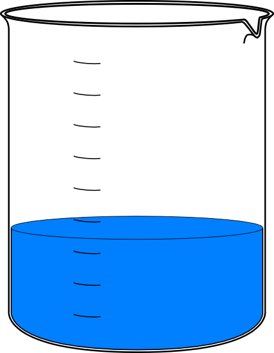

 Click On This Image To View More Places Of InterestFrequently Asked Questions About Dihydrogen Monoxide (DHMO)
What is Dihydrogen Monoxide? Dihydrogen Monoxide (DHMO) is a colorless and odorless chemical compound, also referred to by some as Dihydrogen Oxide, Hydrogen Hydroxide, Hydronium Hydroxide, or simply Hydric acid. Its basis is the highly reactive hydroxyl radical, a species shown to mutate DNA, denature proteins, disrupt cell membranes, and chemically alter critical neurotransmitters. The atomic components of DHMO are found in a number of caustic, explosive and poisonous compounds such as Sulfuric Acid, Nitroglycerine and Ethyl Alcohol. For more detailed information, including precautions, disposal procedures and storage requirements, refer to one of the Material Safety Data Sheets (MSDS) available for DHMO. Should I be concerned about Dihydrogen Monoxide? Yes, you should be concerned about DHMO! Although the U.S. Government and the Centers for Disease Control (CDC) do not classify Dihydrogen Monoxide as a toxic or carcinogenic substance (as it does with better known chemicals such as hydrochloric acid and benzene), DHMO is a constituent of many known toxic substances, diseases and disease-causing agents, environmental hazards and can even be lethal to humans in quantities as small as a thimbleful. Research conducted by award-winning U.S. scientist Nathan Zohner concluded that roughly 86 percent of the population supports a ban on dihydrogen monoxide. Although his results are preliminary, Zohner believes people need to pay closer attention to the information presented to them regarding Dihydrogen Monoxide. He adds that if more people knew the truth about DHMO then studies like the one he conducted would not be necessary. A similar study conducted by U.S. researchers Patrick K. McCluskey and Matthew Kulick also found that nearly 90 percent of the citizens participating in their study were willing to sign a petition to support an outright ban on the use of Dihydrogen Monoxide in the United States. Why haven't I heard about Dihydrogen Monoxide before? Good question. Historically, the dangers of DHMO, for the most part, have been considered minor and manageable. While the more significant dangers of Dihydrogen Monoxide are currently addressed by a number of agencies including FDA, FEMA and CDC, public awareness of the real and daily dangers of Dihydrogen Monoxide is lower than some think it should be. Critics of government often cite the fact that many politicians and others in public office do not consider Dihydrogen Monoxide to be a "politically beneficial" cause to get behind, and so the public suffers from a lack of reliable information on just what DHMO is and why they should be concerned. Part of the blame lies with the public and society at large. Many do not take the time to understand Dihydrogen Monoxide, and what it means to their lives and the lives of their families. Unfortunately, the dangers of DHMO have increased as world population has increased, a fact that the raw numbers and careful research both bear out. Now more than ever, it is important to be aware of just what the dangers of Dihydrogen Monoxide are and how we can all reduce the risks faced by ourselves and our families. What are some of the dangers associated with DHMO? Each year, Dihydrogen Monoxide is a known causative component in many thousands of deaths and is a major contributor to millions upon millions of dollars in damage to property and the environment. Some of the known perils of Dihydrogen Monoxide are: *Death due to accidental inhalation of DHMO, even in small quantities. *Prolonged exposure to solid DHMO causes severe tissue damage. *Excessive ingestion produces a number of unpleasant though not typically life-threatening side-effects. *DHMO is a major component of acid rain. *Gaseous DHMO can cause severe burns. *Contributes to soil erosion. *Leads to corrosion and oxidation of many metals. *Contamination of electrical systems often causes short-circuits. *Exposure decreases effectiveness of automobile brakes. *Found in biopsies of pre-cancerous tumors and lesions. *Given to vicious dogs involved in recent deadly attacks. *Often associated with killer cyclones in the U.S. Midwest and elsewhere, and in hurricanes including deadly storms in Florida, New Orleans and other areas of the southeastern U.S. *Thermal variations in DHMO are a suspected contributor to the El Nino weather effect. What are some uses of Dihydrogen Monoxide? Despite the known dangers of DHMO, it continues to be used daily by industry, government, and even in private homes across the U.S. and worldwide. Some of the well-known uses of Dihydrogen Monoxide are: *as an industrial solvent and coolant, *in nuclear power plants, *by the U.S. Navy in the propulsion systems of some older vessels, *by elite athletes to improve performance, *in the production of Styrofoam, *in biological and chemical weapons manufacture, *in the development of genetically engineering crops and animals, *as a spray-on fire suppressant and retardant, *in so-called "family planning" or "reproductive health" clinics, *as a major ingredient in many home-brewed bombs, *as a byproduct of hydrocarbon combustion in furnaces and air conditioning compressor operation, *in cult rituals, *by the Church of Scientology on their members and their members' families (although surprisingly, many members recently have contacted DHMO.org to vehemently deny such use), *by both the KKK and the NAACP during rallies and marches, *by members of Congress who are under investigation for financial corruption and inappropriate IM behavior, *by kids who play Beyblades, *by the clientele at a number of bath houses in New York City and San Francisco, *historically, in Hitler's death camps in Nazi Germany, and in prisons in Turkey, Serbia, Croatia, Libya, Iraq and Iran, *in World War II prison camps in Japan, and in prisons in China, for various forms of torture, *during many recent religious and ethnic wars in the Middle East, *by many terrorist organizations including al Qaeda, *in community swimming pools to maintain chemical balance, *in day care centers, purportedly for sanitary purposes, *by software engineers, including those producing DICOM software and other DICOM software tools, *by popular computer science professors, *by aspiring young adult fiction writers and mental health advocates, *by international travel bloggers, *by the semi-divine King Bhumibol of Thailand and his many devoted young working girls in Bangkok, *by the British Chiropractic Association and the purveyors of the bogus treatments that the BCA promotes, *by commodities giant Trafigura in their well-publicized and widely-known toxic-waste dumping activities in Ivory Coast, in animal research laboratories, and *in pesticide production and distribution. What you may find surprising are some of the products and places where DHMO is used, but which for one reason or another, are not normally made part of public presentations on the dangers to the lives of our family members and friends. Among these startling uses are: *as an additive to food products, including jarred baby food and baby formula, and even in many soups, carbonated beverages and supposedly "all-natural" fruit juices *in cough medicines and other liquid pharmaceuticals, *in spray-on oven cleaners, *in shampoos, shaving creams, deodorants and numerous other bathroom products, *in bathtub bubble products marketed to children, *as a preservative in grocery store fresh produce sections, *in the production of beer by all the major beer distributors, *in the coffee available at major coffee houses in the US and abroad, *in Formula One race cars, although its use is regulated by the Formula One Racing Commission, and *as a target of ongoing NASA planetary and stellar research. One of the most surprising facts recently revealed about Dihydrogen Monoxide contamination is in its use as a food and produce "decontaminant." Studies have shown that even after careful washing, food and produce that has been contaminated by DHMO remains tainted by DHMO. What is the link between Dihydrogen Monoxide and gun violence? The incidence of gun violence seems to be rising at an alarming rate. A recent stunning revelation is that in every single instance of violence involving guns, both in the U.S. and internationally, Dihydrogen Monoxide was involved. In fact, DHMO is often very available to those who would do harm to others. Meanwhile, apparently no efforts have been made to limit the availability of this potentially dangerous chemical compound. How does Dihydrogen Monoxide toxicity affect kidney dialysis patients? Unfortunately, DHMO overdose is not unheard of in patients undergoing dialysis treatments for kidney failure. Dihydrogen Monoxide overdose in these patients can result in congestive heart failure, pulmonary edema and hypertension. In spite of the danger of accidental overdose and the inherent toxicity of DHMO in large quantities for this group, there is a portion of the dialysis treated population that continues to use DHMO on a regular basis. Are there groups that oppose a ban on Dihydrogen Monoxide? In spite of overwhelming evidence, there is one group in California that opposes a ban on Dihydrogen Monoxide. The Friends of Hydrogen Hydroxide is a group that believes that the dangers of DHMO have been exaggerated. Members claim that Dihydrogen Monoxide, or the less emotionally charged and more chemically accurate term they advocate for it, "Hydrogen Hydroxide," is beneficial, environmentally safe, benign and naturally occurring. They argue that efforts to ban DHMO are misguided. Friends of Hydrogen Hydroxide is supported by the Scorched Earth Party, a radical and loosely-organized California-based group. Sources close to the Scorched Earth Party deny any outside funding from government, industry or pro-industry PACs. Has the press ignored this web site and the Dihydrogen Monoxide problem? For the most part, the press has not reported on the dangers of Dihydrogen Monoxide as much as some would like. Although many private individuals have put up web sites in a major grassroots effort to spread the word, major publications have not. Recently, attention has been paid to the subject thanks to an incident in Aliso Viejo, California. This so-called Aliso Viejo Incident was widely reported in the media, although the director of DHMO.org, Dr. Tom Way, was called a "prankster." Once the Associated Press started circulating the story, it became fact, and the valuable information being provided by the DHMO.org website was deemed to be "rubbish" rather than an honest and unbiased recounting of facts about a dangerous, life-endangering chemical compound. Is it true that using DHMO improves athletic performance? Absolutely! With the numerous allegations of amateur and professional athletes using anabolic steroids and/or blood doping to enhance performance, virtually no attention has been paid to the performance enhancing properties of Dihydrogen Monoxide. It is perhaps the sporting world's dirtiest of dirty little secrets that athletes regularly ingest large quantities of DHMO in an effort to gain a competitive edge over an opponent. One technique commonly used by endurance athletes in sports such as distance running and cycling is to take a large amount of DHMO immediately prior to a race. This is known within racing circles to dramatically improve performance. Sports-medicine physicians warn that ingesting too much Dihydrogen Monoxide can lead to complications and unwanted side-effects, but do acknowledge the link to improved performance. DHMO is not currently considered a banned substance, so post-race urine tests do not detect elevated or abnormal levels of DHMO. Can using DHMO improve my marriage? This is a popular myth, but one which is also actually supported by a number of scientific facts. Dihydrogen Monoxide plays an instrumental role in the centers of the brain associated with feelings of emotional attachment and love. Married couples have found that regular ingestion of DHMO can improve their marriage-related activities, while couples that never ingest DHMO often find that their marriage suffers as well. What are the symptoms of accidental Dihydrogen Monoxide overdose? You may not always recognize that you have been a victim of accidental DHMO overdose, so here are some signs and symptoms to look for. If you suspect Dihydrogen Monoxide overdose, or if you exhibit any of these symptoms, you should consult with your physician or medical practitioner. The data presented here is provided for informational purposes only, and should in no way be construed as medical advice of any sort. Watch for these symptoms: *Excessive sweating *Excessive urination *Bloated feeling *Nausea *Vomiting *Electrolyte imbalance *Hyponatremia (serum hypotonicity) *Dangerously imbalanced levels of ECF and ICF in the blood *Degeneration of sodium homeostasis A recently noted medical phenomenon involves small amounts of DHMO leaking or oozing from the corners of the eyes as a direct result of causes such as foreign particulate irritation, allergic reactions including anaphylactic shock, and sometimes severe chemical depression. What is a chemical analysis of Dihydrogen Monoxide? Recently, German analytical chemist Christoph von Bueltzingsloewen at the Universitaet Regensburg identified what may be key reasons why the dangers of DHMO are ever present. According to von Bueltzingsloewen, the chemical separation of dihydrogenoxide from the hazardous oxygendihydride is extremely difficult. The two similar compounds curiously occur in nearly equimolar distribution wherever they are found. It is not clear how the two contribute directly to the dangers inherent in Dihydrogen Monoxide, although von Bueltzingsloewen believes that a synergetic mechanism, catalyzed by traces of hydrogenhydroxide, plays a major role. What can I do to minimize the risks? Fortunately, there is much you can do to minimize your dangers due to Dihydrogen Monoxide exposure. First, use common sense. Whenever you are dealing with any product or food that you feel may be contaminated with DHMO, evaluate the relative danger to you and your family, and act accordingly. Keep in mind that in many instances, low-levels of Dihydrogen Monoxide contamination are not dangerous, and in fact, are virtually unavoidable. Remember, the responsibility for your safety and the safety of your family lies with you. Second, exercise caution when there is the potential for accidental inhalation or ingestion of DHMO. If you feel uncomfortable, remove yourself from a dangerous situation. Better safe than sorry. Third, don't panic. Although the dangers of Dihydrogen Monoxide are very real, by exercising caution and common sense, you can rest assured knowing that you are doing everything possible to keep you and your family safe. How can I find out more about Dihydrogen Monoxide? We would be happy to tell you more about DHMO! Send us email, and we'll gladly attempt to keep you up-to-date on current developments in the study of Dihydrogen Monoxide, its uses and misuses. There are a number of sites on the world wide web that contain more information on DHMO and related topics. It should be noted that we do not endorse these sites, nor do we control their content or political bias.
Please forward all comlaints to agelos.spanos@gmail.com